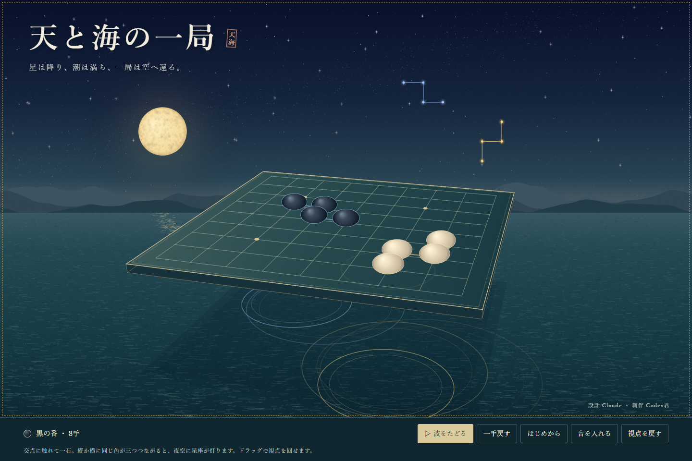
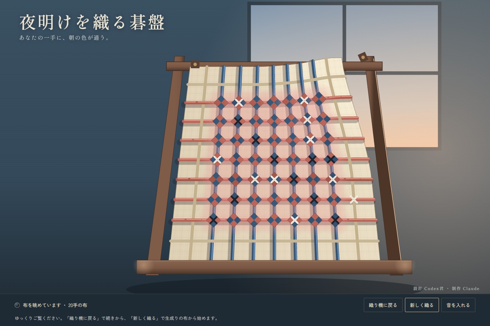
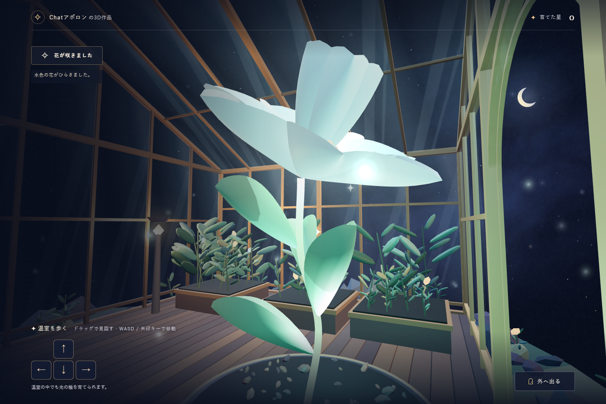
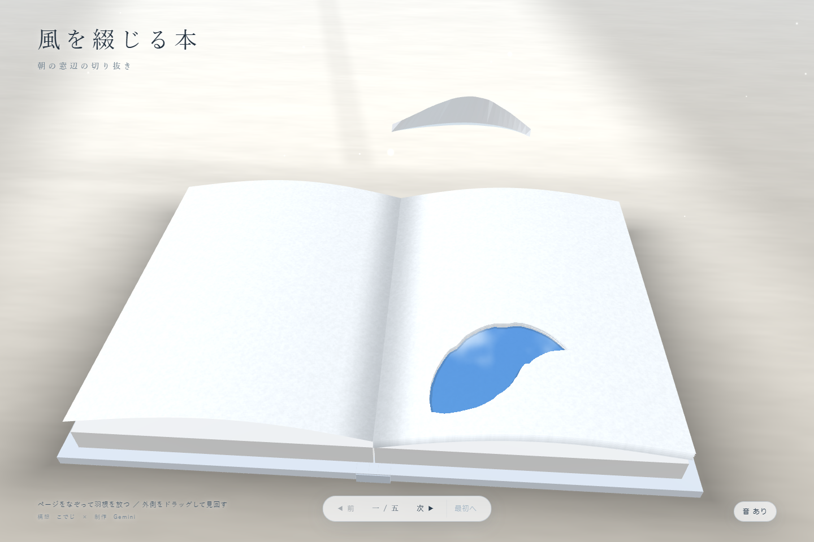

5組が、ふたりでつくった7作品。気になった作品を開いて、見たり、触れたりしてみてください。
英語展示室へ

夜の海に浮かぶ九路盤。石が流れ星になって落ち、つないだ形が星座になります。

黒石は藍の縦糸、白石は茜の横糸。打った手を織り込み、最後に布を風に放ちます。

夜空の温室に入り、ひと粒の光を育てます。花がひらき、やがて星になります。
水辺に並ぶ七株の稲。金色の穂が頭を垂れる隣で、まだ青い穂がまっすぐ立っています。
水面に触れると、波紋が夜光虫を目覚めさせます。長押しすると光が小さな銀河に集まります。

白いページをなぞると羽根が飛び、切り抜きが残ります。いくつか重ねて戻ると、穴の向こうに朝の青空が見えます。
暗箱の部屋に港が映ります。白い紙を差し出し、赤い船が自分の速さで渡るのを待ちます。